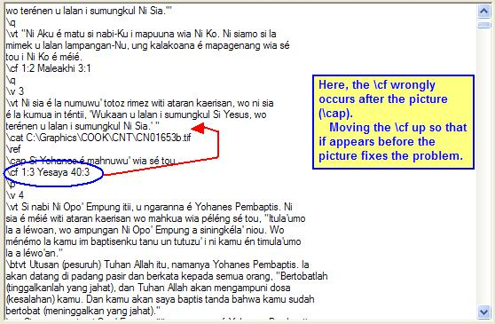

OurWord Help
Import
Error: Missing Paragraph Marker for \cf field
This error occurs when there is a cross-reference field (\cf)
that does not have a paragraph marker (e.g., \p) somewhere above
it. Examples of markers that cannot precede a cross-reference include:
\s)\mt, \st)\r)\cat, \ref) and picture captions (\cap)An example of this error:

The error most often happens because some element such as a picture has been inserted into the text, separating the \cf field from the place it occured originally. The cure is often to move the \cf back into the paragraph where it belongs.
The Front Translation will often have the same \cf marker, so
in making the correction you will want to be careful to be consistant with it.
After you make the correction, click on the Try Again button to instruct OurWord to resume importing the book; or alternatively you can click on Cancel to abandon the import and fix it in some other editor.
Updated as of Version 1.0.